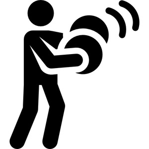
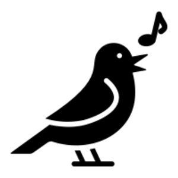
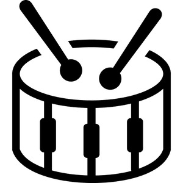
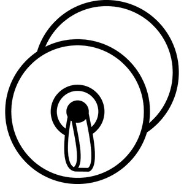

― strike, beat a musical instrument
― make a repeated sound, as of bird voice
― noun m, drum




| view | ⲥⲛⲥⲛ S ⲥⲉⲛⲥⲉⲛ SB | (verb) intr: resound [ηχειν]1444 |
| view | ϭⲛϭⲛ SL ϭⲉⲛϭⲉⲛ, ϭⲙϭⲙ, ϫⲛϫⲛ, ϫⲓⲛϫⲓⲛ (nn), ϫⲙϫⲙ S ϫⲉⲛϫⲉⲛ B | (verb) intr: make music with instrument or voice2590 |
| view | ⲕⲱⲗϩ SALB ⲕⲗϩ- S ⲕⲟⲗϩ⸗ S ⲕⲁⲗϩ⸗ AL ⲕⲟⲗϩ† S | (verb) intr: strike, knock [κρουειν, κροτειν]
― to summon congregation ― process in mat weaving ― in disease, throb, ache (?) tr: strike, clap [κροτειν]804 |
| view | ⲟⲩⲗⲗⲉ SL ⲟⲩⲉⲗⲗⲉ S ⲟⲩⲉⲗⲗⲓ, ⲟⲩⲏⲗⲗⲓ Sf | (noun female) melody, music [μελος, ωδη, ασμα, μουσικα]1719 |
ⲕⲟⲩⲕⲙ S, ⲕⲟⲩⲕⲉⲙ F v ⲕⲙⲕⲙ.
109a
ⲕⲙⲕⲙ, ⲕⲟⲩⲙⲕⲙ (Ge 31 27), ⲕⲟⲩⲕⲙ S, ⲕⲉⲙⲕⲉⲙ B, ⲕⲟⲩⲕⲉⲙ F vb intr, a strike, beat a musical instrument: FR 120 B David ⲉϥⲕ. ⲉⲧⲉϥⲕⲩⲑⲁⲣⲁ (cf ib 124 ⲕⲓⲙ ⲉⲧⲉϥⲕⲓⲑ.), Dif 1 52 B sim ⲕ. ϧⲉⲛⲧⲉⲕⲕⲓⲑ. حرّك. Cf ⲕⲓⲙ thus used: R 1 2 13 S, BSM 16 B &c. b make a repeated sound, as of bird's voice: Mich 550 24 S ⲉⲩⲕ. ϩⲛⲧⲉⲩⲁⲥⲡⲉ (var TT 18 ϫⲙ]ϫⲙ). nn m, drum: P 44 58 S مزهر, Ge 31 27 SB, Ex 15 20 S (Mor 22 102) B, 2 Kg 6 5 SB (P 44 109 طبول), Ps 80 3 B (دف), Is 5 12 SBF τύμπανον; He 11 35 B (S om) beaten like ⲕ. τυμπανίζειν; BAp 23 S angel Kadiel with his ⲕ., Va 67 70 B κιθ. & ⲕ., ShZ 639 S psaltery, flutes & ⲕ., BMis 13 S ϩⲉⲛⲙⲟⲩⲙⲕⲟⲩⲙ (sic) & flutes. ⲣⲉϥⲕ., var ⲣⲉϥⲉⲣ ⲕ. B nn, drummer: Ps 67 26 (S ⲣⲉϥϫⲛϫⲛ) τυμπανίστρια. In ⲣⲙⲕⲙⲕⲙ Glos 204 S τύμπανον ? cart-wheel (ⲣⲙ- here obscure). Cf ϭⲛϭⲛ (ϭⲙϭⲙ).
176a
ⲙⲟⲩⲛⲕⲟⲩⲙ S v ⲕⲙⲕⲙ.
772a
ϫⲙϫⲙ v ⲕⲙⲕⲙ & ϭⲛϭⲛ.